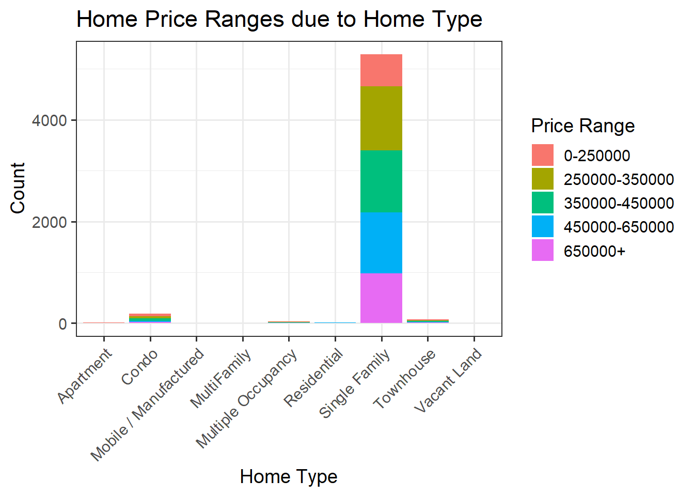
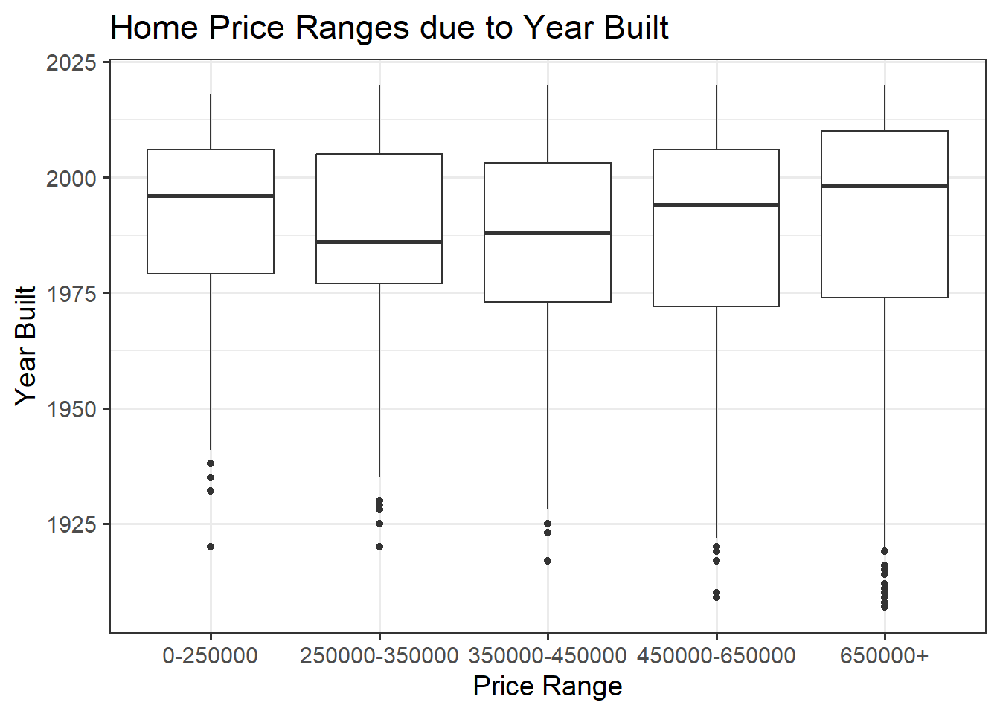
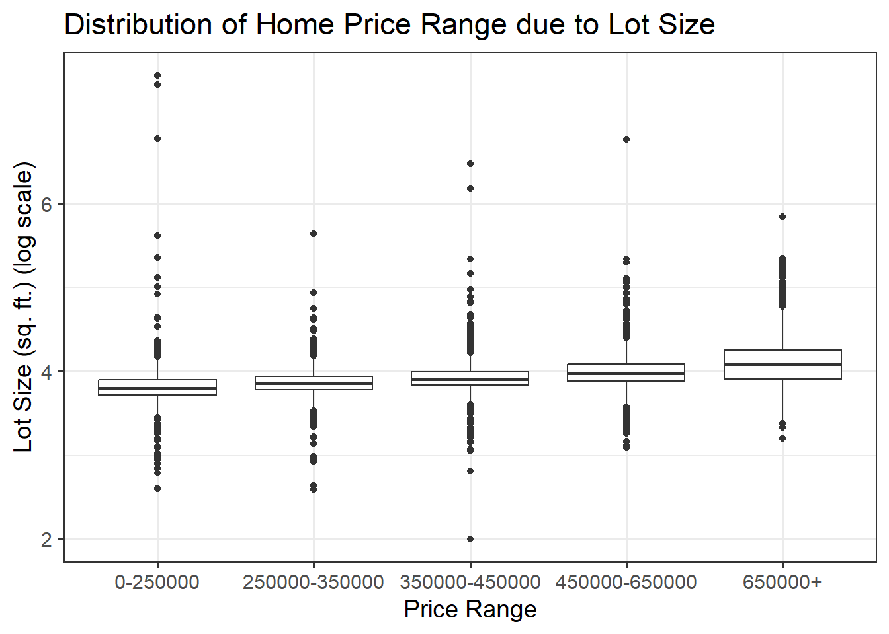
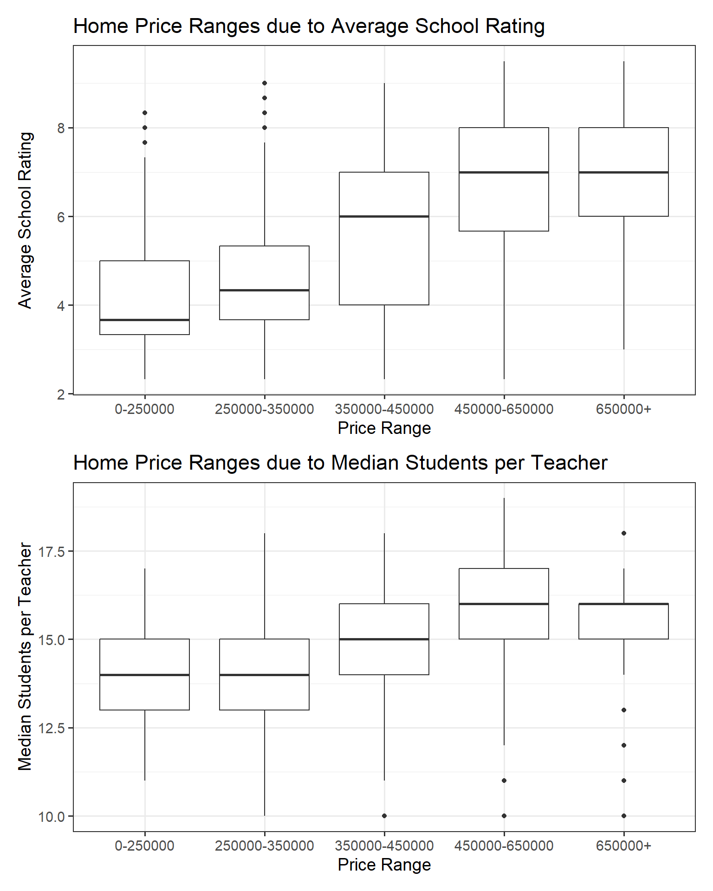
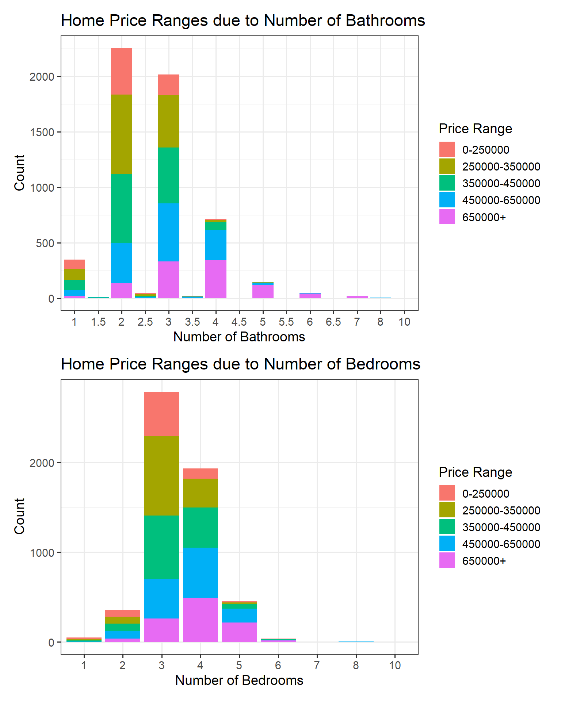

# including necessary librarieslibrary(tidyverse)library(tidymodels)library(patchwork)library(kableExtra)library(ggmosaic)# stylingoptions(kable_styling_bootstrap_options =c("hover", "striped"))theme_set(theme_bw(base_size =14))# read in datadata <-read_csv("data.csv")comp <-read_csv("comp.csv")data <- data |>mutate(priceRange =as.factor(priceRange)) |>mutate(hasSpa =as.factor(hasSpa))comp <- comp |>mutate(hasSpa =as.factor(hasSpa))# split data into training, test, and validation setsset.seed(1234567890)data_splits <-initial_split(data, prop =0.75)train <-training(data_splits)test <-testing(data_splits)unregister <-function() { env <- foreach:::.foreachGlobalsrm(list=ls(name=env), pos=env)}train_folds <-vfold_cv(train, v =10)my_metrics <-metric_set(accuracy, mn_log_loss)
Statement of Purpose
This report will build and analyze classification models to predict the price range of a home based on several predictor variables. Real estate sellers may use this information to accurately price newly listed homes, which will help to limit list price errors such as being too expensive for the home characteristics, or too cheap for the home characteristics. By improving pricing strategies, this analysis helps sellers maximize their market efficiency and attract the right buyers.
Executive Summary
Introduction
Exploratory Data Analysis
This exploratory data analysis aims to gives us a sense of what we are working with. It will explore properties of our response variable, priceRange, and some of the available predictor variables. The goal is to pick out relationships between predictor and response variables, and potentially find variables that have no impact on our response.
First we want to look at the distribution of the priceRange variable, which will be our response variable for our classification models.
Code
train |>ggplot() +geom_bar(aes(x = priceRange), fill ="steelblue") +labs(title ="Distribution of Home Price Ranges",x ="Price Range",y ="Count")
We see that the priceRange response variable is relatively uniformly distributed, with a dip for the lowest price range. However, this price range is not rare which will be beneficial for our model construction, as we will be able to accurately represent all price ranges in our model.
Let’s look at some plots between our predictor variables and the priceRange response variable and see if we can spot any trends. First, we look at different home types and how our price range is affected.
Code
train |>ggplot() +geom_bar(aes(x = homeType, fill = priceRange)) +labs(title ="Home Price Ranges due to Home Type",x ="Home Type",y ="Count",fill ="Price Range" ) +theme(axis.text.x =element_text(angle =45, hjust =1))

From this plot, we see that an overwhelming majority of the homes in the data set are single family homes. In this specific category, the bar plot indicates that the priceRange variable is relatively uniform.
Let’s look at our response variable as explained by yearBuilt.
Code
train |>ggplot() +geom_boxplot(aes(y = yearBuilt, x = priceRange)) +labs(title ="Home Price Ranges due to Year Built",y ="Year Built",x ="Price Range" )

This plot indicates that the yearBuilt predictor variable does not have a large influence on our priceRange response variable, since the IQR of the year built for each price range is relatively the same.
Let’s look at the lot size of each home and how it affects the price range.
Code
train |>ggplot() +geom_boxplot(aes(x = priceRange, y =log10(lotSizeSqFt))) +labs(title ="Distribution of Home Price Range due to Lot Size",x ="Price Range",y ="Lot Size (sq. ft.) (log scale)" )

This plot uses a log scale for the lotSizeSqFt since it contains some extreme outliers. In general, we see what is expected, in that the increase of lot size generally increases the price range of a home.
Let’s see if schools have an impact on the price range of homes. We have a couple variables that explore this idea: avgSchoolRating and MedianStudentsPerTeacher.
Code
plot1 <- train |>ggplot() +geom_boxplot(aes(x = priceRange, y = avgSchoolRating)) +labs(title ="Home Price Ranges due to Average School Rating",x ="Price Range",y ="Average School Rating" )plot2 <- train |>ggplot() +geom_boxplot(aes(x = priceRange, y = MedianStudentsPerTeacher)) +labs(title ="Home Price Ranges due to Median Students per Teacher",x ="Price Range",y ="Median Students per Teacher" )plot1 / plot2

These two variables related to schools show some obvious positive trends with the priceRange response variable. It was expected that as avgSchoolRating increased, so would priceRange, however it is important to note that as MedianStudentsPerTeacher increased, we also see an increase in priceRange. This might battle your intuition, but the data supports this conclusion.
Let’s look at some characteristics specific to our homes, the numOfBathrooms and numOfBedrooms variables.
Code
plot3 <- train |>ggplot() +geom_bar(aes(fill = priceRange, x =as.factor(numOfBathrooms))) +labs(title ="Home Price Ranges due to Number of Bathrooms",x ="Number of Bathrooms",y ="Count",fill ="Price Range" )plot4 <- train |>ggplot() +geom_bar(aes(fill = priceRange, x =as.factor(numOfBedrooms))) +labs(title ="Home Price Ranges due to Number of Bedrooms",x ="Number of Bedrooms",y ="Count",fill ="Price Range" )plot3 / plot4

These plots display some interesting information about our homes. In both plots, we see that as the number of bathrooms/bedrooms increase, we start to see a domination from the higher price range homes. This makes intuitive sense. On the flip side, for lower numbers of bathrooms/bedrooms we see more domination by the lower price range homes. Again, this makes intuitive sense.
This exploratory data analysis helps us to visualize our data and spot initial trends. Through this analysis, we have learned that our response variable, priceRange, is relatively uniformly distributed which is a desirable quality for model construction. We see that a majority of our homes in the data set are single family, and that lot size has a clear relationship with price range. We also saw that schools in the area of the homes, as well as number of bathrooms and bedrooms have clear relationships with price range. Lastly, we also saw a variable that didn’t have much of an effect on our price range response, that being yearBuilt. This information will help us construct more effective classification models in the next section.
Model Construction
In this section we will explore various model classes and compare their performances across different procedures such as cross-validation and hyperparameter tuning. It is required to use a multiclass classifier for this data set, rather than a binary classifier, so logistic regression and support vector machines will not be considered.
KNN Model
We begin our model construction with a nearest neighbor model.
Without Cross Validation or Hyperparameter Tuning
The first nearest neighbor model we build will be used as a baseline, without any cross validation or hyperparameter tuning.
This baseline nearest neighbor model shows a multiclass log loss of \(0.36\) and an accuracy of \(94 \%\). This seems quite hopeful, but cross validation will give us a better feeling of how our model is performing.
With Cross Validation
We next use cross validation to fit a nearest neighbor onto \(5\) folds.
From cross validation, we see more realistic estimates of our model’s accuracy and multiclass log loss. Here, we see a multiclass log loss of \(6.06\) and an accuracy of \(49 \%\), which is quite a bit worse than the original model.
With Hyperparameter Tuning
Next we build a nearest neighbor model using hyperparameter tuning. We start by tuning only hyperparameter, neighbors, to see if we get an improvement.
From cross validation, we get a mean multi class log loss of \(2.11\)! This is much better than the model built using cross validation. We could continue to tune this model over more hyperparameters, however we will find greater improvements by moving onto a different model class.
Decision Tree Model
For this model class we turn our attention to the decision tree. This is a powerful multiclass classifier that will be the basis of our ensemble models in the next two sections.
Without Cross Validation or Hyperparameter Tuning
Like the nearest neighbor model, we want to see how a decision tree model does on the data as a baseline.
Similar to the nearest neighbor model, this baseline model is extremely hopeful and might not actually be capturing the performance of our model. Here, we see a multiclass log loss of \(1.32\) and an accuracy of \(44 \%\).
With Cross Validation
We’ll fit a decision tree model using cross validation to get a better idea of our model’s performance.
The results from cross validation show a mean multiclass log loss of \(1.33\) and an accuracy of \(43 \%\). These metrics are only slightly worse than the baseline model.
With Hyperparameter Tuning
We will tune the tree_depth hyperparamater and observe the effect on the results.
From cross validation, we see a mean multiclass log loss of \(1.33\). This is much better than the model built using cross validation, and only one hyperparameter was tuned. Similar to the nearest neighor model, we will not spend any more time tuning this model, and will instead move on to ensemble models that will have greater improvements.
Random Forest Model
In this section we consider random forest models which employ lots decision trees in parallel. We will no longer consider a baseline for our ensemble models since it does not provide great insights.
With Cross Validation
We start by fitting a random forest model using cross validation.
Here, we see a mean multiclass log loss of \(0.94\) and an accuracy of \(61 \%\). This is quite a bit better than both the nearest neighbor and decision tree models, validating our reasoning for not tuning any further.
With Hyperparameter Tuning
To further improve upon this model, we tune the trees hyperparameter and observe the effect.
We see only a marginal gain in our multiclass log loss, from \(0.9402184\) to \(0.9389383\). Before tuning this model any further, we will look at a boosted tree model and determine which model class is more effective on this data set.
Boosted Tree Model
A boosted tree model is similar to a random forest, but utilizes trees in series rather than in parallel.
With Cross Validation
First we build a boosted tree model using cross validation to get a sense of our model’s performance.
Our cross validation of the boosted tree model results in a mean multiclass log loss of \(0.99\) and an accuracy of \(59 \%\). This is quite a bit better than the nearest neighbor and decision tree cross validation models, but is slightly worse than the random forest cross validation model
With Hyperparameter Tuning
Similar to the random forest model, we tune the trees hyperparameter and observe the effect.
From this tuning process, our multiclass log loss actually got worse, going from \(0.9855049\) to \(0.9908005\). This indicates that maybe a boosted tree model is not the best for this dataset.
Revisiting Random Forest Model
The random forest model performed the best on our training data when only tuning a single hyperparameter. Now, we will also tune min_n() and increase the initial Bayesian steps to \(10\). (Will need to come back and figure out mtry, throwing errors)
Our mean multiclass log loss has now decreased to \(0.9360904\), which is not much better than our first round of hyperparameter tuning. Let’s pull out the best model from this tuning process and make predictions on the training set.
In this section we have built various classification models and compared their results. Different construction techniques such as cross validation and hyperparameter tuning were used to improve model performance on a test set. We began with simple models, the nearest neighbor and decision tree models. These models performed relatively well on the training data, however they had significant decreases in performance when cross validation was used. Next, we moved into ensemble models, random forests and boosted trees. These models are more effective than simple models since they utilize hundreds of decision trees rather than just one. These models performed quite a bit better than the simple models, especially in terms of multiclass log loss. The random forest slightly outperformed the boosted trees model, and thus we further improved this model class by tuning more hyperparameters. We used this final random forest model to make predictions for the Kaggle competition.